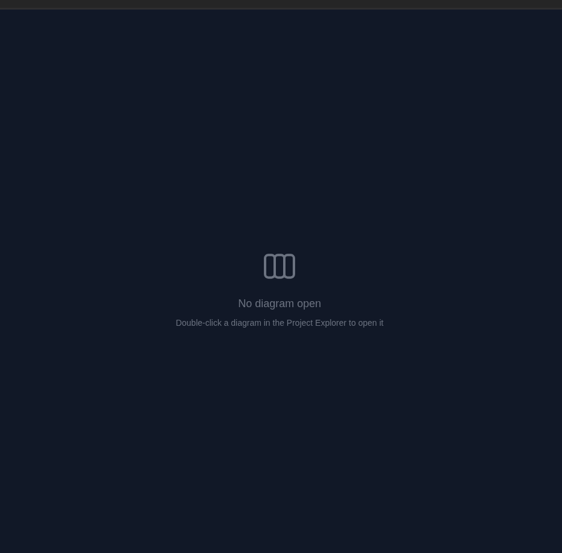
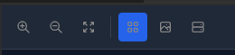
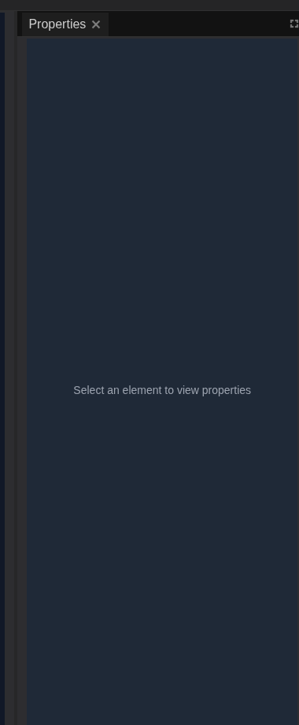
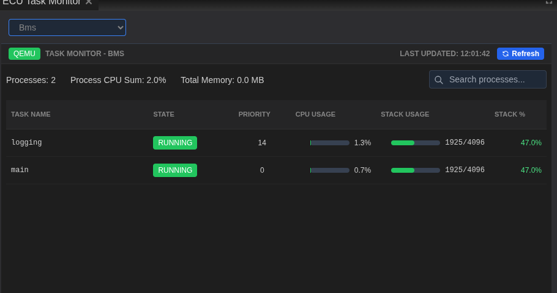

Controls & Panels¶
This page is a detailed tour of the controls you will use most often in the desktop app. It is organized by workflow mode so you can jump straight to the panels that matter for your current task. The descriptions below focus on what each panel shows, how to interpret it, and the actions you are expected to take there.
Panels are dockable. You can drag a panel tab to move it, dock it beside other panels, or stack it into a tab group. If you ever lose a panel or the layout feels off, use View -> Reset Windows to return to the default layout for the active mode.
System Design Panels¶
System Design mode is where you create and configure systems before running them. The layout is built around the system tree, the toolbox, and the central diagram canvas.
Project Explorer¶
The Project Explorer is the system tree. It reminds you what exists in the system and provides quick access to diagrams and nodes.

- System structure is listed as Diagrams, ECUs, Networks, and Configurations.
- Open a diagram by double-clicking its name. The canvas changes from an empty state to the diagram editor.
- Select a node (ECU or network) to load its settings in the Properties panel.
Use the Project Explorer as a navigation hub: if the canvas feels empty, open a diagram from here first.
Toolbox¶
The Toolbox is a searchable library of system components.

- Components lists ECU types you can drag into the diagram.
- Networks lists bus types, such as CAN, to connect ECUs.
- Search filters the list so you can quickly locate a specific component.
The Toolbox is most useful when you are building a system from scratch. Drag a component onto the canvas, then wire it to a network with the connection tools on the canvas.
System Canvas¶
The System Canvas is the visual editor. It shows your diagram and provides the tools to position ECUs, connect them, and review topology.

- Empty state appears until a diagram is opened.
- Nodes and links represent ECUs and networks, with labels and connection lines.
- Selection drives the Properties panel on the right so you can configure what you clicked.
The canvas toolbar sits at the top of the diagram area and provides quick view controls for navigation and layout.

Typical usage:
- Open a diagram from the Project Explorer.
- Drag ECUs and networks from the Toolbox into the canvas.
- Arrange the nodes so the topology is clear.
- Select any item to configure it in Properties.
Properties Panel¶
The Properties panel is context-aware: it changes based on the selected item.

- Diagram selection shows metadata like name and timestamps.
- ECU selection exposes hardware type, identifiers, and runtime settings.
- Network selection exposes network type, DBC file selection, and baud rate.
Use Apply Changes at the bottom to persist edits. If a field is required, the UI keeps the action visible so you do not miss it.
Monitoring Panels¶
Monitoring mode appears when systems are running. These panels focus on runtime health, resource usage, and live logs.
ECU Hardware Status¶
This table is your quick "is everything alive?" check.

- Container state shows whether each ECU container is running.
- Architecture / board / OS type help verify that the correct firmware target is active.
- CPU cores and memory give you a hardware profile at a glance.
Start here when a system fails to run or an ECU looks misconfigured.
ECU Resource Monitor¶
The Resource Monitor tracks CPU and memory usage for the selected ECU. The chart provides instant visibility into performance spikes and steady-state load.

What to watch:
- CPU Usage indicates processing load; spikes often line up with heavier tasks.
- Memory Usage helps detect leaks or abnormal allocation.
- Active Tasks shows how many tasks are currently scheduled in the ECU runtime.
Use the Refresh button to force a new snapshot when investigating sudden changes.
ECU Task Monitor¶
The Task Monitor shows the process list for the selected ECU. It is ideal for identifying which tasks are consuming CPU or stack.

Key details:
- Task state and priority show which processes are active and how they are scheduled.
- CPU usage helps you pinpoint heavy workloads.
- Stack usage highlights tasks that may be near their allocation limits.
Treat this panel as your per-ECU "top" view inside the system.
ECU Console¶
The ECU Console is a live log stream. It aggregates log lines and lets you filter, pause, and export.

- Filter messages to focus on a single ECU or keyword.
- Pause to freeze scrolling while you inspect a line.
- Clear to remove clutter before a new test run.
- Export to capture logs for offline analysis.
If you are troubleshooting startup problems, keep the Console open while you start the system so you can see errors as they appear.
Terminal Panel¶
The Terminal panel provides a direct shell into an ECU container. It is the fastest way to run ad-hoc commands, inspect files, or confirm runtime state.

How to use it:
- Select an ECU from the drop-down to open a terminal session.
- Clear wipes the visible output to keep the session readable.
- Copy and search icons let you reuse command output and find strings.
Terminal access depends on permissions and may be restricted by your deployment policy.
CAN Log Analysis Panels¶
CAN Log Analysis mode is for live traffic inspection or playback review. It combines a DBC-aware signal tree, a frame table, and signal charts.
Signal Viewer¶
The Signal Viewer is a hierarchical list of frames and decoded signals.

- Search by signal name or frame ID to filter the list.
- Expand frames to see decoded signals and live values.
- Active counts show how many signals are currently updating.
This panel is your entry point when you need to locate a specific measurement quickly.
Network Traffic¶
Network Traffic shows the raw CAN frames as they arrive.

- Filters at the top help narrow the stream by CAN ID or data contents.
- Bus selector lets you focus on a specific network if more than one is active.
- Controls include Configure, Start, Stop, and export actions when recording is available.
Use this panel to verify that frames are arriving before you look at decoded signals.
Signal Chart¶
Signal Chart is a time-series view of selected signals.

- Time window controls the visible duration on the chart.
- Auto-scale keeps the chart readable as values change.
- Pause freezes the line so you can inspect a period of time.
- Export captures the chart for reporting.
Charts are most useful after selecting signals in the Signal Viewer, since the chart only plots selected series.
Playback & Injection Panels¶
Playback and injection controls live in the Signal Player & Injection panel. This is where you load datasets, map channels, and start playback.

- Select BLF chooses a dataset for playback.
- Inspect bundle verifies frames, channels, and the DBC mapping.
- Playback controls (Play/Pause/Stop) are enabled when the system is running.
- Injection controls (Start all/Pause all/Stop all) let you push injected messages into the network.
- Channel mapping is driven by the Networks list so you can verify frames and DBC matches.
If playback controls are disabled, start the system from the main toolbar first.
Layout & Panel Behavior¶
- Docking: drag a panel tab to re-dock it or group it with another panel.
- Tabs: panels can stack as tabs in the same region of the window.
- Reset: use View -> Reset Windows to restore the default layout for the active mode.
A stable layout makes troubleshooting faster. Keep the panels you rely on (Console, Task Monitor, or Signal Chart) visible while you run tests to reduce context switching.